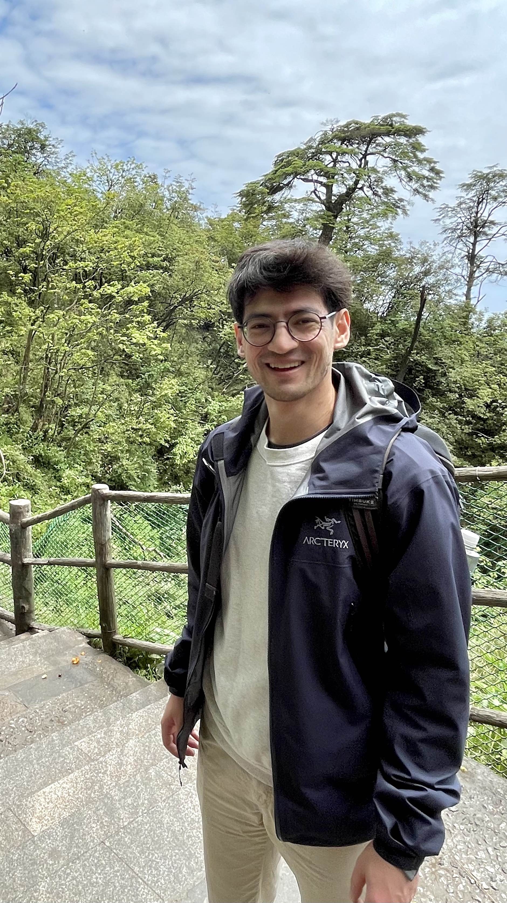

Nawaz Sultani

I'm a mathematician currently looking to transition into industry roles.
I was most recently a postdoc in the Department of Mathematics
at Academia Sinica under the mentorship of Y.P. Lee.
I received my PhD in 2022 from the
University of Michigan, where my advisors were
Aaron Pixton, Felix Janda, and Yongbin Ruan.
My research is in enumerative algebraic geometry, with my most recent works being in orbifold Gromov-Witten theory.
I am also interested in other enumerative theories, such as quantum K-theory, and in derived algebraic geometry.
Research
Publications and Preprints
- Computing Gromov-Witten Invariants of Non-Convex Complete Intersections in Weighted Projective Stacks,
with Felix Janda and Yang Zhou
Preprint | arXiv:2409.06193
- Subtleties of Quantum Lefshetz without Convexity, with Rachel Webb
To appear in Proceedings of the American Mathematical Society | arXiv:2208.08987
- Some Applications of Abelianization in Gromov-Witten Theory, with Rachel Webb
Preprint | arXiv:2208.07439
- Gromov-Witten Theory of Non-Convex Complete Intersections
PhD Thesis. Available upon request.
- Reeb Dynamics of the Link of the A_n Singularity, with Leonardo Abbrescia, Jo Nelson, and Irit Huq-Kuruvilla
Involve | arXiv:1509.02939
Expository Writings
Teaching
- Math 105 (Pre-Calculus). University of Michigan. Fall 2021, Fall 2016.
Graduate Student Course Coordinator in Fall 2019
- Math 115 (Calculus I). University of Michigan. Winter 2017.
- Math 116 (Calculus II). University of Michigan. Fall 2017.
- Math 215 (Calculus III). University of Michigan. Fall 2018 (teaching assistant).
- Michigan Math and Science Scholars. "Ruler and Compass Constructions." Summer 2021 (teaching assistant).
- M-STEM Level IV (Prep for Calculus III). Summer 2019.
Contact Information
Email: sultanitw (at) gmail (dot) com